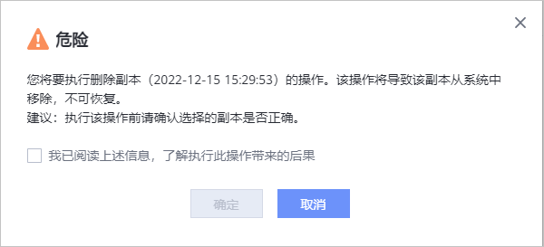
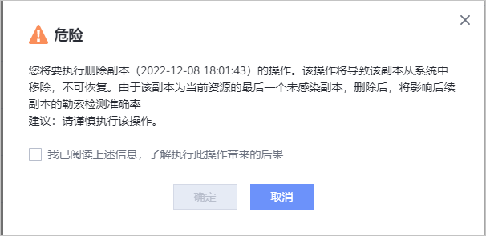

勒索检测副本不需要或不可用时，可以通过本节操作，删除副本。
注意事项
- 删除勒索检测副本前，请确认不再使用该副本执行恢复操作。
- 勒索检测状态为“检测中”的副本不支持删除。
- 删除资源的最后一个未感染副本将影响后续副本的勒索检测准确率，请谨慎删除。
操作步骤
- 选择“数据利用 > 防勒索 ”。
- 选择VMware/CNware/NAS文件系统/NAS共享/文件集。

仅1.6.0及后续版本支持CNware。
- 单击某个资源的副本。
- 在右侧弹出的窗口中，选择。
- 系统将弹出如下提示，确认提示信息无误后，勾选“我已阅读上述信息，了解执行此操作带来的后果”后，单击“确定”。

如果您要删除当前资源的最后一个未感染副本，系统将弹出如下提示，确认提示信息无误后，勾选“我已阅读上述信息，了解执行此操作带来的后果”后，单击“确定”。
